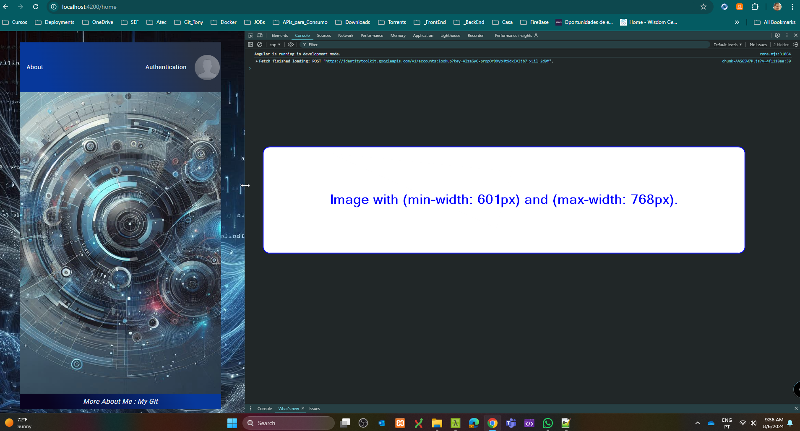
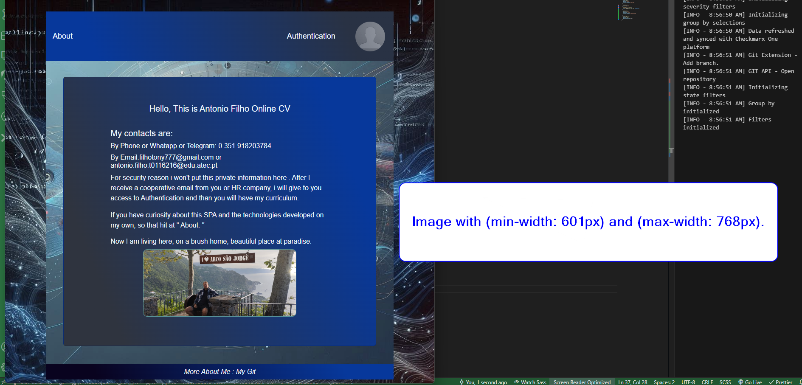
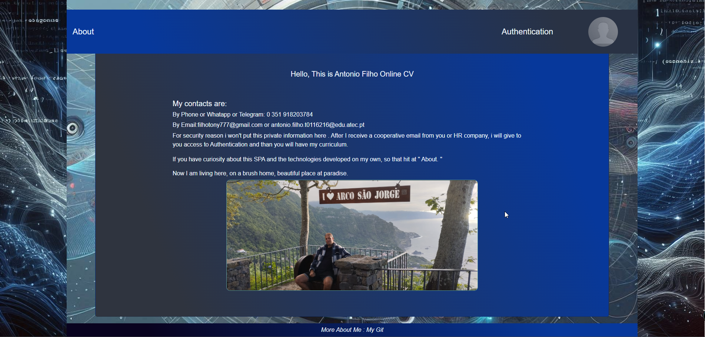
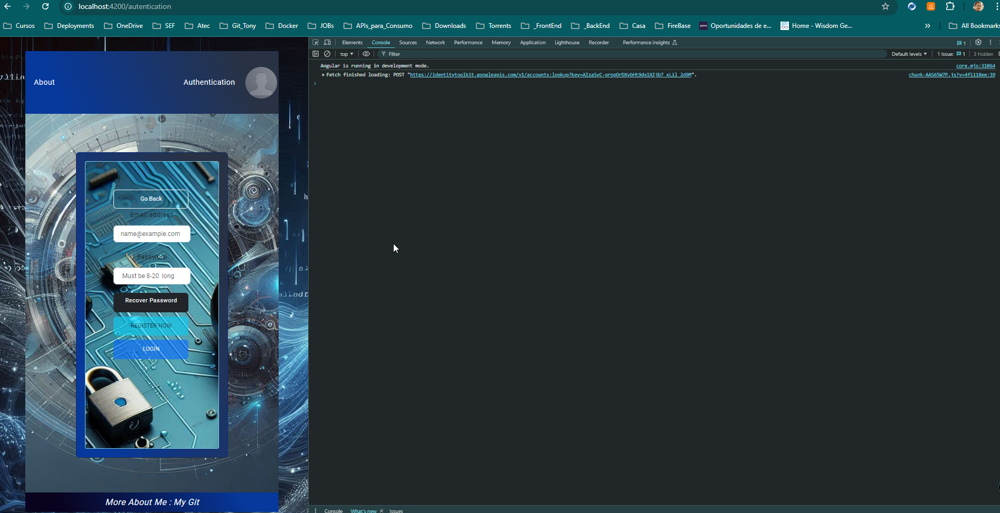
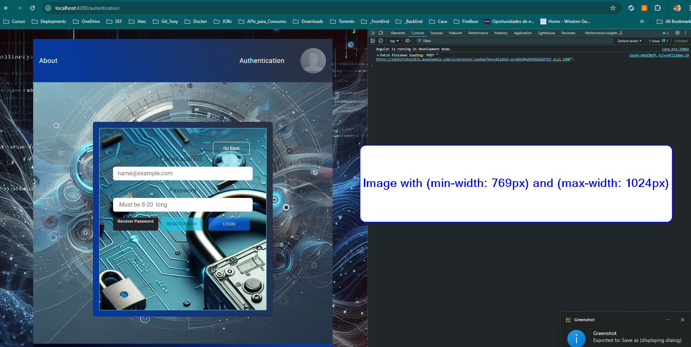
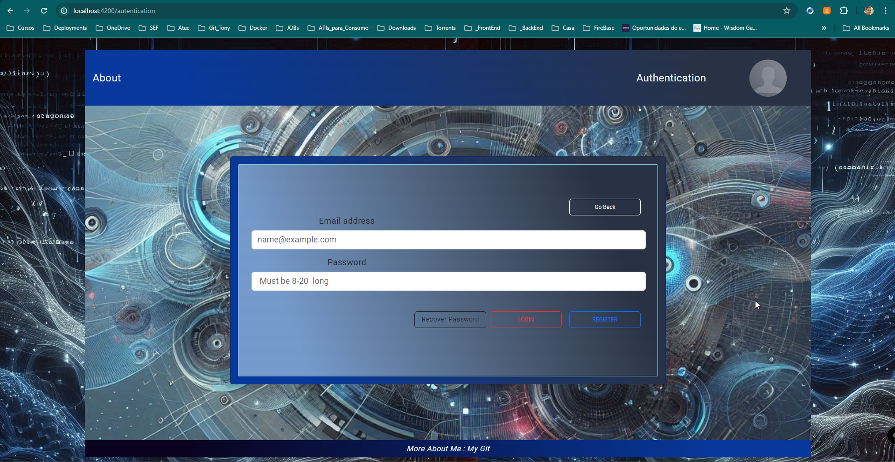

<div class="local-center">
  <div id="localUp" class="card">

    <div class="card-body">

      <h5 class="card-title">
        This is Tony Filho I started my career as Angular Developer in 2020, now
        I am working as Junior Java and Mid-Level (Pleno) in Angular.
        I got 4 years in Angular and 1 year and Java EE and SpringBoot.
      </h5>

      <p class="card-text">
        This description highlights your experience and skills, clearly
        conveying your proficiency with the mentioned technologies and your
        commitment to developing modern, effective web applications.
      </p>
      <h5 class="card-title">Angular Developer</h5>
      <p class="card-text">
        I am dedicated to creating dynamic and responsive user interfaces. With
        years of experience in front-end development, I have a deep
        understanding of Angular, one of the most powerful JavaScript frameworks
        for building Single Page Applications (SPAs).
      </p>
      <h5 class="card-title">### Technical Specialties ####</h5>
      <p class="card-text">
        I am a passionate Angular My expertise in Angular includes creating
        reusable components, managing complex states, and optimizing performance
        to ensure a smooth user experience. I am familiar with the latest
        versions of Angular as well as best development practices, including
        using RxJS for reactive programming and TypeScript.
      </p>
      <h5 class="card-title">### RXJS ####</h5>
      <p class="card-text">
        This is impossible to talk about Angular without to talk RXJS and Observable and another Operators, for me this
        is a most power library or tool to unsynchronized data. Is very hard to get knowledge, but after the knowledge
        step you can see so power is that library. For me is the best.
      </p>
      <h5 class="card-title">### Signals ####</h5>
      <p class="card-text">
        Now we talk about the new darling from Angular, the Signal(), if I could to comper Signal() between
        Observables(), it understand Signal() is more easy, but I prefer to use RXJS, but without prejudices, but
        between Signal() and some lifecycles hooks I prefer Signal().
      </p>
      <h5 class="card-title">#### Media Query ####</h5>
      <p class="card-text">
        I utilized in this SPA you can test it. I used media query to images and
        texts. Minimize this pages and you will see tI utilized in this SPA you
        can test it. I used media query to images and texts. Minimize this pages
        and you will see the website is responsive.
      </p>
      <h5 class="card-title">#### Flexbox ####</h5>
      <p class="card-text">
        I utilize Flexbox to build flexible and responsive layouts. With
        Flexbox, I can align and distribute elements on the page efficiently,
        ensuring that the design adapts to different screen sizes and devices.
        My understanding of Flexbox properties such as `justify-content`,
        `align-items`, and `flex-direction` allows me to create complex and
        consistent layouts.
      </p>
      <h5 class="card-title">#### CSS Grid ####</h5>
      <p class="card-text">
        is another powerful tool in my arsenal, enabling the creation of
        advanced two-dimensional layouts. With Grid, I can explicitly define
        rows and columns and control the precise placement of elements on the
        screen. My proficiency with Grid properties such as
        `grid-template-rows`, `grid-template-columns`, and `grid-area` empowers
        me to develop sophisticated designs that meet the specific needs of each
        project.
      </p>

      <h5 class="card-title">### Commitment to Excellence ####</h5>
      <p class="card-text">
        My commitment is always to deliver high-quality solutions that not only
        meet but exceed client expectations. By utilizing Angular in conjunction
        with Flexbox and CSS Grid, I develop interfaces that are not only
        visually appealing but also highly functional and accessible. If you are
        looking for a developer who combines technical knowledge with creativity
        and attention to detail, I am here to turn your ideas into reality.
      </p>
    </div>
    <div class="localUper">
      <a href="#" (click)="scrollToTop($event)">Up</a>
    </div>
    <div class="local-img">
      
      
      
      
      
      


    </div>


    <div class="localUper">
      <a href="#" (click)="scrollToTop($event)">Up</a>
    </div>
  </div>
</div>